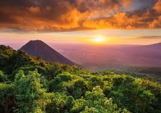
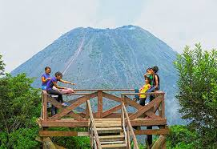

Lugares turisticos de el salvdor
Cerro verde
El Parque Nacional Los Volcanes es el área natural protegida en El Salvador, que comprende tres de los 14 volcanes “jóvenes”, de la Cordillera Apaneca-Ilamatepec: Volcán de Santa Ana, Volcán de Izalco y Cerro Verde, ubicados en los departamentos de Santa Ana y Sonsonate.
Fue fundado por don Raúl Contreras y abierto al público en el año de 1955, formando parte del “Complejo Los Volcanes” y establecido como un área prioritaria para la conservación del medio ambiente en El Salvador.
El Cerro Verde cuenta con una extensión de 54 manzanas donde se ubican los senderos interpretativos: “Las Flores Misteriosas” y “Una ventana a la naturaleza”; atractivos turísticos que puedes disfrutar al visitar el lugar, además de apreciar la biodiversidad de flora y fauna.

También, encuentras el “Hotel de Montaña” administrado por Casa 1800.
Las caminatas a los volcanes de Izalco (con una altura de 1,980 msnm) y el volcán de Santa Ana conocido como Ilamatepec (que tiene una altura de 2,381 msnm), son opciones turísticas que llaman la atención de los más intrépidos y amantes de las experiencias al aire libre, que disfrutan poner a prueba sus habilidades físicas.
Además, el Cerro Verde cuenta con miradores, áreas de juegos recreativos, abundante flora y fauna, modernos servicios sanitarios, estacionamiento, cafeterías, restaurante, entre otros atractivos de los cuales disfrutarás.

El Instituto Salvadoreño de Turismo, ha trabajado junto a los guías turísticos locales para brindar a los visitantes extranjeros y nacionales, una interpretación del reino natural en una forma educativa y diferente.
ubicacion:
Horarios:
De lunes a domingo de 8:00 a.m. a 8:00 p.m.
Tarifas:
Nacionales $1.50
Extranjeros $3.00
Cabañas:
Sencilla $35.00 (24 horas)
Familiar $55.00 (24 horas)
HORARIO DE CAMINATAS A LOS VOLCANES:
Izalco, 10:30 a.m.
Santa Ana, 8:30 a.m.
Cupo limitado